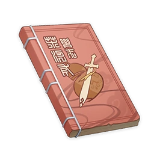

Liyue · Books & Literature
Records of the Gallant
This two-volume Liyue collection presents knight-errant legends: an unnamed hermit aids a robbed herb-seller, while an indigo-robed maiden appears in a tale set amid the Guili Plains’ depopulation. Neither figure is identified by name or era.

Two independent knight-errant tales
The collection describes itself as stories and legends of Liyue’s knight-errants. Some are said to have circulated for a long time, but the books do not name an author, identify a common hero, or give a shared chronology.
Volume I is a Jueyun Karst tale about a rescued herb-seller. Volume II is a Bishui River legend framed by a change in the Guili Plains’ population. Neither volume names the mysterious figures at its center.
Volume I: the hermit and Qiangu
Qiangu, a herb-seller traveling through misty Jueyun Karst, is robbed and bound by brigands. A deep, unseen voice commands him to rise and ascend; the ropes loosen, and he follows the voice to a summit at dawn.
There he finds the brigands bound to a withered pine and an old man with snow-white hair and beard. The elder returns Qiangu’s possessions, refuses payment, and accepts a single Mora as a future wedding gift so that he might attend the feast. The story later gives competing rumors about sightings of the old man as a miner or a fisherman, then says that no one knows his name.
The volume’s references to adepti and spirits are part of its herb-gatherer folklore. It never identifies the hermit as an adeptus, Zhongli, or any other named figure.
Volume II: a maiden by the Bishui River
“Dust” opens by saying that the Guili Plains once had many Glaze Lilies, but troubles forced former residents to flee; Liyue Harbor’s prosperity later attracted people to take their place. This is the story’s folk framing of a regional population shift, without a named date or list of migrants.
The legend then follows a maiden in an indigo robe who walks near the Bishui River among fireflies and seelies. Guests at Wangshu Inn propose three explanations: she is a lost illuminated beast, a servant mourning a dead god, or a gallant hero hiding her name. The book preserves these as guesses, not answers.
A hunter sees the maiden fight several shadows beneath the moon. The next day, the bodies of Millelith and land surveyors are discovered by the river. Search parties are sent, but the maiden is never seen again; the final image is of Glaze Lilies still blooming along her riverbank.
The Guili Plains setting and its limits
The opening of Volume II resembles the population movement described in other Liyue records, including the departure from the Guili Plains and the growth of Liyue Harbor. That comparison can support the broad setting, but “Dust” does not name the god, the date, the maiden, or the people who fled.
The maiden’s possible connection to a dead god is only one of three in-story speculations. The text does not identify her as Guizhong’s servant, an adeptus, a Yaksha, or any named historical person. The hermit is equally unnamed. Keeping those gaps intact preserves what the collection actually says.
This is an original CoreGG reading guide, not an official HoYoverse article or a reproduction of the game text. Source links below identify the records used so you can check the original context.
Sources & references
Check these sources for the original game text and reference trail.